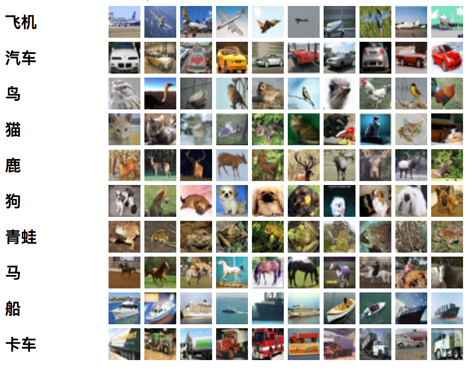

多分类图像识别案例
CIFAR-10
CIFAR-10数据集由10个类别的60000 32x32彩色图像组成，每个类别有6000张图像。有50000个训练图像和10000个测试图像。数据集分为五个训练集和一个测试集，每个集有10000个图像。测试集包含来自每个类的正好1000个随机选择的图像。训练集的每个类别5000个图像。图像类别如下：

下载数据集
可以去官网下载，https://www.cs.toronto.edu/~kriz/cifar.html
里面有很多种版本我们下载 CIFAR-10二进制版本。
二进制版本格式
二进制版本包含文件data_batch_1.bin，data_batch_2.bin，data_batch_4.bin，data_batch_5.bin以及test_batch.bin。这些文件的格式如下：
<1 x label> <3072 x像素>
...
<1 x label> <3072 x像素>
第一个字节是第一个图像的标签，它是0-9范围内的数字。接下来的3072个字节是图像像素的值。前1024个字节是红色通道值，接下来是1024个绿色，最后1024个是蓝色。
所以每个文件包含10000个这样的3073字节的“行”的图像，还有一个名为batches.meta.txt的文件。这是一个ASCII文件，将范围为0-9的数字标签映射到有意义的类名。